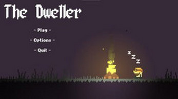
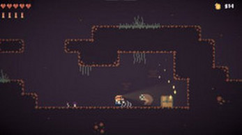

The Dweller
NOTE:The Dweller is stuck at the bottom of a cave. As it becomes night, the monsters come out to fight. But with the power of your shotgun, you can blast through these monsters to reach the top. Please note that The Dweller is a project and not a polished game.
NOTA: The Dweller está atrapado en el fondo de una cueva. Cuando se hace de noche, los monstruos salen a luchar. Pero con el poder de tu escopeta, puedes abrirte paso a través de estos monstruos para llegar a la cima. Ten en cuenta que The Dweller es un proyecto y no un juego pulido.
Use the password TD24 to unzip the file.


Status: Prototype
Author: Slexe
Genre: Adventure, Shooter
Tags: 2D, Pixel Art, Horror, Singleplayer